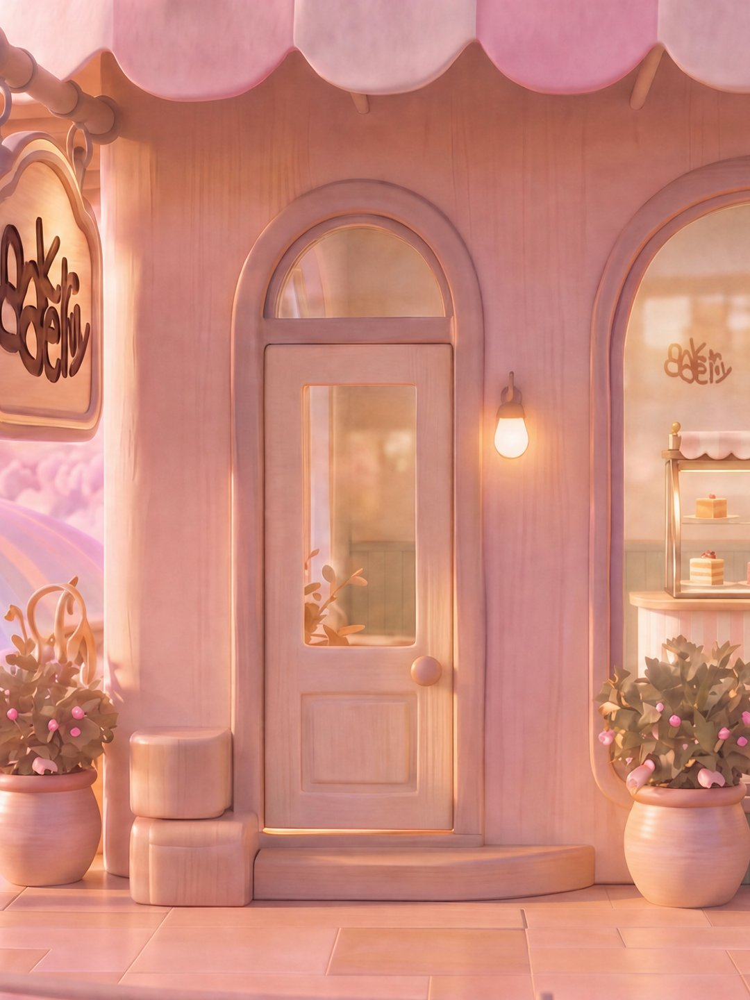
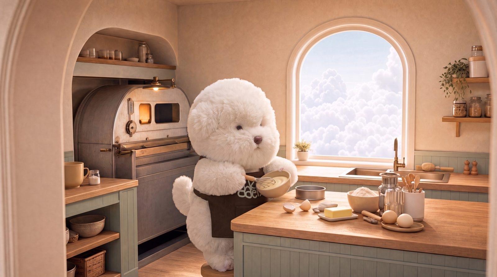
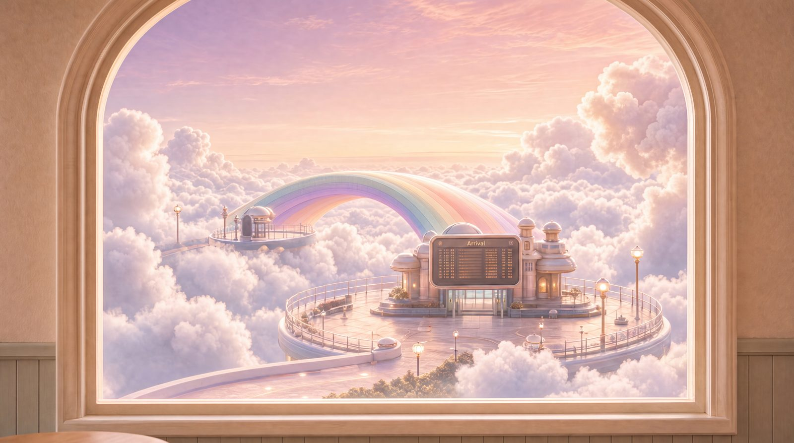
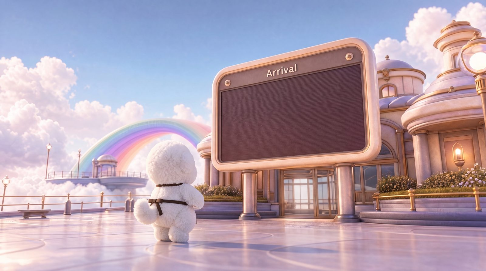
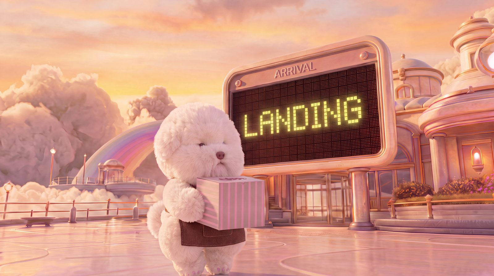
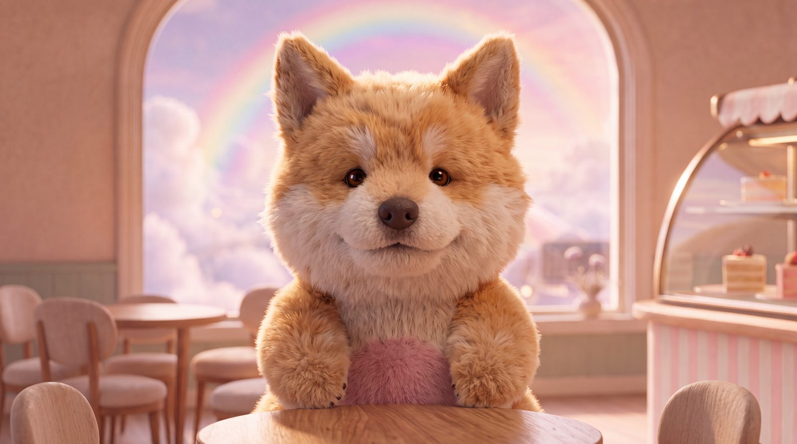
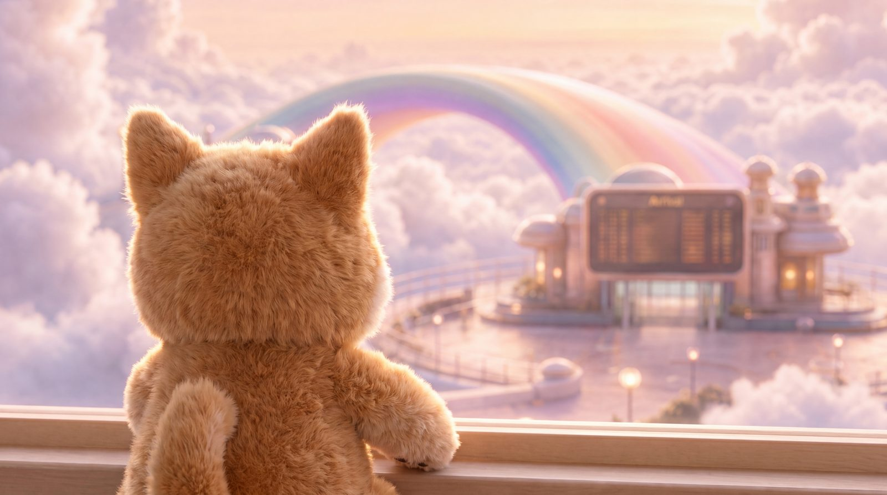
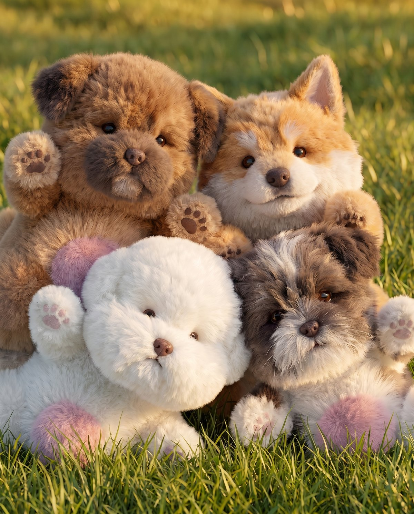

기다릴게,
이름을
유기견 인식 개선을 주제로 한 체험형 전시.
오래 기다려 온 한 아이에게, 관람객이
6–10분의 행복한 '하루'를 선물하는 경험을 만들었다.

숫자 대신, 하루
유기동물 문제를 다루는 콘텐츠는 대부분 통계와 호소로 말한다.
이 프로젝트는 순서를 뒤집었다.
관람객은 먼저 성향이 맞는 아이를 소개받고,
게임으로 하루를 함께 보내고, 애니메이션을 보고, 같이 사진을 남긴다.
그 아이들이 보호소에서 가장 오래 기다리는 아이들 —
대형견, 노령견, 겁 많은 아이를 닮았다는 사실은
관람의 마지막에야 조용히 전한다.
'입양하세요'라는 문장은 전시 어디에도 없다.
마음이 먼저 붙은 뒤에 사실을 알게 되면,
메시지는 설득이 아니라 관람객 자신의 결론이 된다.
교육이 아니라 관계
지식을 전달하는 대신, 한 아이를 돌보는 작은 행동들로 경험을 구성했다.
실패 없는 경험
게임에서 실수해도 페널티가 없다. 다시 배려할 기회로 부드럽게 되돌아간다.
의미의 지연
진실은 마지막에 공개한다. 관계가 먼저, 메시지는 그 다음.
무지개다리 앞,
작은 베이커리
무지개 다리를 건넌 강아지들이 가족을 마중 나가기 전,
'마중 선물'을 주문하는 가상의 베이커리예요.
파스텔 팔레트와 몽글한 캐릭터로 누구든 편하게 들어올 수 있는 문턱을 만들었어요.

민희방
말이 많진 않지만 곁에 있으면 마음이 편안해지는 아이. 베이커리를 찾는 모든 손님을 조용히 반겨요.

달이
처음 보는 길도, 처음 보는 사람도 꼬리부터 먼저 반기는 씩씩한 친구예요.

콩
서두르는 법이 없는 아이. 콩이 옆에 있으면 시간이 천천히 흘러요.

별이
말하지 않아도 마음을 알아채고, 슬며시 곁에 와 앉는 친구예요.
다섯 개의 존,
하나의 하루
부스 동선 전체를 '한 아이와 보내는 하루'의 서사로 묶었다.
만나고, 놀고, 이야기를 보고, 기억을 남기고, 인사한다.
오늘의 친구 찾기
입구의 태블릿에서 안내자 방이가 다섯 가지 질문으로
관람객의 성향을 읽고, 가장 잘 맞는 아이를 소개한다.
생성 영상 위에 대사·선택지 레이어를 얹은 시네마틱 웹앱으로 만들었다.

관람객을 '입양 희망자'가 아니라 '하루를 선물하러 온 사람'으로 초대했다. 아이를 고르는 것이 아니라, 소개받는 만남이다.
매칭된 아이를 화면에 등장시키지 않았다. 첫 만남을 게임 라운지로 미뤄, 디지털 매칭이 실제 공간의 만남으로 이어지게 했다.
결과 화면은 곧 교환권이다. 스태프에게 보여주면 그 아이의 NFC '이음 키링'을 받고, 키링이 다음 존의 입장권이 된다.
- Q1오늘 하루는 어땠어?신나게 뛰어다닌 하루 · 구름처럼 느긋한 하루 · 생각이 많았던 하루
- Q2쉬는 날엔 주로 뭐 해?무조건 밖으로! · 집에서 뒹굴뒹굴 · 좋아하는 것에 깊이 빠지기
- Q3처음 만난 친구 앞에선?내가 먼저 인사해 · 웃으면서 천천히 · 조용히 지켜봐
- Q4기운 없는 날, 뭐가 제일 필요해?신나는 기분 전환 · 아무것도 안 하는 시간 · 마음 알아주는 한마디
- Q5오늘 그 친구랑 어떤 시간을 보내주고 싶어?같이 신나게 달리기 · 나란히 낮잠 · 가만히 눈 맞추기
돌봄을 플레이로
매칭된 아이와 '하루'를 보내는 체험형 스토리 게임 세 편.
산책, 자리 만들기, 재우기 —
돌봄의 순간들을 그대로 놀이로 옮겼다.
러닝 게임
보호소에서 환한 공원까지 함께 달린다. 이 아이의 첫 산책을 만들어 주는 게임.
숨은그림찾기
집 안에 밥그릇·장난감·방석을 제자리에 놓는다. 이 아이의 '자리'를 만드는 게임.
리듬게임
품에서 잠드는 아이를 깨우지 않고 지킨다. 마음 놓고 잘 수 있는 '안전'을 주는 게임.
AI 애니메이션
「기다릴게, 이름을」
약 2분 45초의 전시 상영작. 전 장면을 AI 생성 파이프라인으로 제작했다.
엄마가 귓속말로 알려준 이름 하나를 품고,
무지개다리 앞 베이커리에서 가족을 기다리는 방이의 이야기.
시나리오 · 컷리스트
시나리오를 쓰고 컷 단위로 분해. 컷마다 카메라와 필요한 키프레임을 정의했다.
키프레임 생성
이미지 생성 모델로 컷별 키프레임 제작. 캐릭터 시트를 기준 삼아 컷 간 일관성을 맞췄다.
이미지 → 영상
확정된 키프레임을 image-to-video 모델로 컷 단위 영상화. 컷당 3–7초로 짧게 끊어 품질을 확보했다.
편집 · 사운드
완성된 컷을 편집으로 이어 붙이고 자막과 사운드를 얹어 상영본을 완성했다.






“당신이 이름을 불러주는 순간, 기다림이 시작됩니다.”
강아지들 사이,
오늘의 손님
관람객을 촬영해 8akeryy 화풍의 캐릭터로 바꾸고,
오늘 하루를 함께한 강아지들 사이에 합성하는 iPad 키오스크.
결과물은 그 자리에서 QR로 가져간다.


촬영 → 동의 → AI 합성 → QR 전달까지 부스 안에서 1–2분에 끝나는 플로우로 설계했다. 서버리스 API가 이미지 생성 모델을 호출하고 결과를 클라우드 저장소에 올린다.
웹·SNS 게시에 동의한 관람객의 결과물만 웹사이트에 자동으로 쌓인다. 전시 기간 이 페이지 아래 갤러리가 실시간으로 채워졌다.
전시를 다녀간 손님들
공개에 동의한 방문자의 기록이에요.
마지막 존은,
편지
출구에서 관람객은 오늘 함께한 아이에게 편지를 남긴다.
달이·콩·별이가 오래 기다리고 있는
실제 아이들을 닮았다는 이야기를 전하는 곳도 여기다.
하루의 끝에서, 메시지는 각자의 문장이 되어 남는다.
세 명이, 전시 하나를
브랜딩부터 애니메이션, 게임, 웹, 현장 제작물까지
전 과정을 팀 내부에서 AI 생성 도구와 함께 제작했다.
| 파트 | 만든 것 | 도구 |
|---|---|---|
| 브랜드 · IP | 캐릭터 4종과 세계관, 로고·컬러 시스템, 패키징, 안내 책자·등신대·키링 등 현장 제작물 | 디자인 툴 · 이미지 생성 모델 |
| 애니메이션 | 전시 상영작 — 시나리오, 키프레임, 컷 단위 영상화, 편집 | 이미지 생성 · image-to-video · 영상 편집 툴 |
| 게임 | 체험형 스토리 게임 3편 (러닝 · 숨은그림찾기 · 리듬) | 게임 엔진 · 자체 아트 |
| 매칭 태블릿 | 생성 영상 + 대사 레이어 2단 구성의 시네마틱 설문 웹앱 | 웹 (HTML/JS) · 생성 영상 소스 |
| AI 포토부스 | iPad 키오스크, 실시간 캐릭터 변환, QR 전달, 동의 기반 웹 게재 | 이미지 생성 API · Vercel Serverless · Blob |
| 웹 · 운영 | 8akeryy 웹사이트와 이 아카이브, NFC 키링 연동, 현장 운영 | GSAP · Lenis · Vercel · NFC/QR |
YARR Studio
이채영
- AI 애니메이션 기획·연출·제작
- AI 포토부스·웹사이트 개발
- 브랜드 기획
유덕원
- 프로젝트 총괄 기획
- 체험형 스토리 게임 기획·개발
최희수
- 전시 콘텐츠 기획
- 게임 아트·캐릭터
- 굿즈 디자인·제작